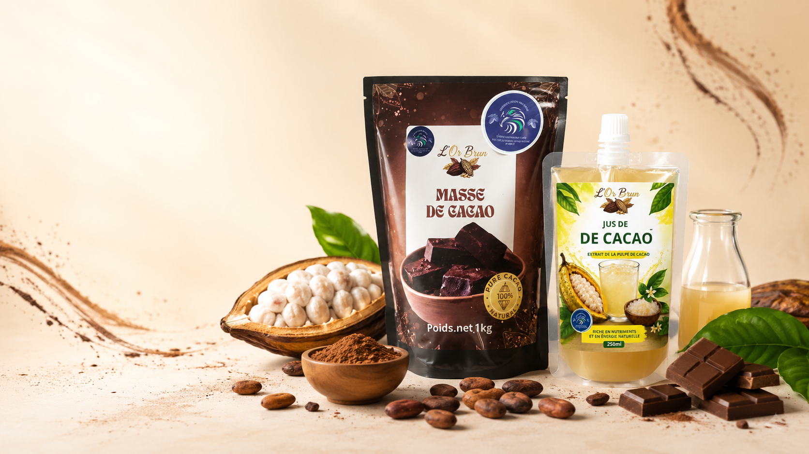

Beurre de cacao
Beurre de cacao — 1 kg
Un beurre de cacao traçable, issu de filières durables, adapté à la chocolaterie, à la pâtisserie, à la biscuiterie et aux préparations alimentaires.
40 €
Catalogue KIC
KIC facilite l’accès des chocolatiers, pâtissiers, glaciers, biscuitiers, restaurateurs et industries agroalimentaires à des ingrédients cacao semi-finis de qualité, issus de filières responsables et traçables.
4 produits
Beurre de cacao
Un beurre de cacao traçable, issu de filières durables, adapté à la chocolaterie, à la pâtisserie, à la biscuiterie et aux préparations alimentaires.
40 €

Poudre de cacao
Une poudre adaptée aux pâtissiers, glaciers, biscuitiers, restaurateurs, fabricants de boissons et professionnels de l’agroalimentaire.
15 €

Masse de cacao
Une matière première essentielle à la fabrication du chocolat, sélectionnée pour les artisans-transformateurs et les professionnels européens.
Sur devis
Demander un devis
Éclats de cacao
Des éclats croquants adaptés à la pâtisserie, à la chocolaterie artisanale, aux glaces et aux préparations gourmandes.
Sur devis
Demander un devisLes prix affichés ne comprennent pas les frais de livraison. Ceux-ci sont calculés selon l’adresse, le volume de la commande et le mode de transport sélectionné. La mention HT ou TTC reste à confirmer avant la mise en ligne commerciale.
Aucun produit dans cette catégorie pour le moment.
Solutions professionnelles
KIC accompagne chocolatiers, pâtissiers, glaciers, biscuitiers, restaurateurs, distributeurs et industries dans la sélection de produits cacao semi-finis répondant à leurs contraintes de production.
Demander un devisLaissez votre adresse e-mail pour recevoir des informations adaptées à votre besoin d’approvisionnement.
